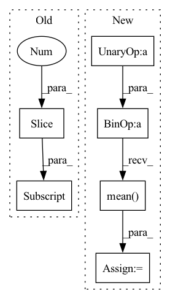

Pattern ID :22007

Before Change
// Policy objective
advantages_batch = (
rewards_batch[:-1]
+ self.discount_factor_gamma * value_functions_batch[1:]
- value_functions_batch[:-1]
)
After Change
mean_entropy += m.entropy().mean()
log_prob += m.log_prob(actions_batch[..., idx])
policy_loss = (-log_prob * normalized_advantages_batch).mean()
// Total loss
loss = (
policy_loss
In pattern: SUPERPATTERN
Frequency: 3
Non-data size: 6
Instances
Fragment ID: 69863210
Project Name: salesforce/warp-drive
Commit Name: 6b18b856e39120e9a386038cb81ed9e6b61f48c0
Time: 2021-10-29
Author: sunil.srinivasa@salesforce.com
File Name: warp_drive/training/algorithms/a2c.py
M Class Name: A2C
N Class Name: A2C
M Method Name: compute_loss_and_metrics(6)
N Method Name: compute_loss_and_metrics(6)
M Parent Class:
N Parent Class:
M File Name: warp_drive/training/algorithms/a2c.py
N File Name: warp_drive/training/algorithms/a2c.py
M Start Line: 48
M End Line: 77
N Start Line: 49
N End Line: 99
'>
Before Change
def get_loss(self, x):
predictions = self(x[:, :-1])
loss = F.cross_entropy(predictions.reshape(-1, predictions.shape[-1]), x[:, 1:].reshape(-1))
accuracy = (torch.argmax(predictions[:, -1, :], dim=-1) == x[:, -1]).float().mean()
return loss, {"loss": (loss.item(), x.shape[0]*(x.shape[1]-1)), "accuracy": (accuracy.item(), x.shape[0])}
After Change
// print(torch.argmax(predictions[:, -1, :], dim=-1), x[:, -1])
loss = F.cross_entropy(predictions[:, -1, :], y)
accuracy = (torch.argmax(predictions[:, -1, :], dim=-1) == y).float().mean()
attn_entropies = sum([-(attn * torch.log(attn+1e-7)).sum(dim=-1).mean().item() for attn in attns]) / len(attns)
param_norm = parameter_norm(self)
return loss, {"loss": (loss.item(), x.shape[0]), "accuracy": (accuracy.item(), x.shape[0]),
"attn_entropy": (attn_entropies, len(attns)*x.shape[0]*(x.shape[1]-1)), "param_norm": (param_norm, 1)}
'>
Fragment ID: 69863147
Project Name: sea-snell/grokking
Commit Name: 9652db76d1cbdbe66e24e709168b12fa25ba00fc
Time: 2021-11-18
Author: sea_snell@icloud.com
File Name: grokk_replica/grokk_model.py
M Class Name: GrokkModel
N Class Name: GrokkModel
M Method Name: get_loss(3)
N Method Name: get_loss(2)
M Parent Class: nn.Module
N Parent Class: nn.Module
M File Name: grokk_replica/grokk_model.py
N File Name: grokk_replica/grokk_model.py
M Start Line: 17
M End Line: 20
N Start Line: 18
N End Line: 26
'>
Before Change
registrator = ImageRegistrator("similarity").to(ref_batch.device)
homography = registrator.register(ref_batch.detach(), img_batch.detach()).to(ref_batch.device)
breakpoint()
warped_imgs = homography_warp(img_batch, homography, ref_batch.shape[-2:])
// Compute new PSNR:
mse_per_example = ((warped_imgs.detach() - ref_batch)**2).view(B, -1).mean(dim=1)
registered_psnrs = 10 * torch.log10(factor**2 / mse_per_example)
After Change
// If only this was parallelized, todo ...
for img, ref in zip(img_batch.detach(), ref_batch.detach()):
img, ref = img[None, ...], ref[None, ...]
mse = ((img - ref)**2).mean()
default_psnrs += [10 * torch.log10(factor**2 / mse)]
// Align by homography:
registrator = ImageRegistrator("similarity", num_iterations=2500)
registrator.warper = partial(HomographyWarper, padding_mode="reflection")
'>
Fragment ID: 69863176
Project Name: jonasgeiping/breaching
Commit Name: 6b4ffc1d9faebf9b2f809f69b0ed4a9af670db47
Time: 2021-11-29
Author: jonas.geiping@googlemail.com
File Name: breaching/analysis/metrics.py
M Class Name: AnonimousClass
N Class Name: AnonimousClass
M Method Name: _registered_psnr_compute_kornia(3)
N Method Name: _registered_psnr_compute_kornia(3)
M Parent Class:
N Parent Class:
M File Name: breaching/analysis/metrics.py
N File Name: breaching/analysis/metrics.py
M Start Line: 80
M End Line: 94
N Start Line: 81
N End Line: 99